수질환경산업기사 (2015-03-08 기출문제)
1과목: 수질오염개론
1. 동점성(kinematick viscosity)계수와 관계가 가장 먼 것은?
- Poise
- Stoke
- cm2/sec
- μ/p(점성계수/밀도)
(정답률: 77%)

2. 분뇨처리시설 중의 투입조, 저류조, 소화조 등의 여러 부분에 부식을 유발하는 가스는?
- H2S
- NH3
- CO2
- CH4
(정답률: 84%)
3. 세포증식에 관한 식(Monod)에 대한 설명 중 틀린 것은? (단,
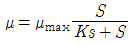
)- μ는 세포의 비증가율을 말하며, 단위는 g이다.
- μmax는 세포의 비증가율 최대치를 말한다.
- S는 제한 기질의 농도이며 단위는 g/L이다.
- KS는 μ = 1/2(μmax) 일 때의 제한기질의 농도를 말한다.
(정답률: 65%)
4. 친수성 콜로이드의 특성과 가장 거리가 먼 것은?
- 표면장력은 분산매 보다 상당히 작다.
- 에멀젼 상태이다.
- 틴달효과가 적거나 전무하다.
- 점도는 분산매와 큰 차이가 없다.
(정답률: 61%)
5. 원생식물은 세포의 분화정도에 따라 진핵생물과 원핵생물로 나눌 수 있다. 다음 중 원핵세포와 비교하여 진핵세포에만 있는 것은?
- DNA
- 리보솜
- 편모
- 세포소기관
(정답률: 74%)
6. 하천의 수질이 다음과 같을 때 이 물의 이온강도는? (단, Ca2+ = 0.02M, Na+ = 0.⑤M, Cl- = 0.02M)
- 0.⑤5
- 0.065
- 0.075
- 0.085
(정답률: 77%)
7. 환경미생물에 관한 설명으로 옳지 않은 것은?
- Bacteria는 형상에 따라 막대형, 구형, 나선형 등으로 구분되며 용해된 유기물을 섭취한다.
- Fungi는 탄소동화작용을 하지 않으며 폐수 내 질소와 용존산소가 부족한 환경에서도 잘 성장한다.
- Algae는 단세포 또는 다세포의 유기영양형 광합성 원생 동물이다.
- Protozoa는 편모충류, 섬모충류 등이 있으며 흔히 박테리아 같은 미생물을 잡아 먹는다.
(정답률: 74%)
8. 지하수의 특성에 관한 설명으로 옳지 않은 것은?
- 염분농도는 비교적 얕은 지하수에서는 하천수보다 평균 30% 정도 이상 큰 값을 나타낸다.
- 지하수에 무기물질이 물에 용해되는 순서를 보면 규산염, Ca 및 Mg의 탄산염, 마지막으로 염화물 알칼리 금속의 황산염 순서로 된다.
- 자연 및 인위의 국지적 조건의 영향을 받기 쉽다.
- 세균에 의한 유기물의 분해가 주된 생물 작용이 된다.
(정답률: 65%)
9. 물의 물리적 특성을 나타내는 용어 중 단위가 잘못된 것은?
- 밀도 – g/cm3
- 표면장력 – dyne/cm2
- 압력 – dyne/cm2
- 열전도도 cal/cm⦁sec⦁℃
(정답률: 82%)
10. 60,000m3/day 살수를 살균하기 위하여 30kg/day의 염소가 주입되고 살균 접촉 후 잔류염소는 0.2mg/L일 때 염소 요구량(농도)은?
- 0.3mg/L
- 0.4mg/L
- 0.6mg/L
- 0.8mg/L
(정답률: 54%)
11. 회복지대의 특성에 대한 설명으로 옳지 않은 것은? (단, Whipple의 하천정화단계 기준)
- 용존산소량이 증가함에 따라 질산염과 아질산염의 농도가 감소한다.
- 혐기성균이 호기성균으로 대체되며 Fungi도 조금씩 발생한다.
- 광합성을 하는 조류가 번식하고 원생동물, 윤충, 갑각류가 번식한다.
- 바닥에서는 조개나 벌레의 유충이 번식하며 오염에 견디는 힘이 강한 은빛 담수어 등의 물고기도 서식한다.
(정답률: 70%)
12. 자연수 중 지하수의 경도가 높은 이유는 다음 중 주로 어떤 물질의 영향인가?
- NH3
- O2
- Colloid
- CO2
(정답률: 83%)
13. 수질오염에 관한 미생물의 작용에 있어서 흔히 사용되는 조류(Algae)의 경험적 화학 조성식은?
- C5H7O2N
- C5H8O3N
- C5H7O3N
- C5H8O2N
(정답률: 68%)
14. 해수의 특성에 관한 설명으로 옳지 않은 것은?
- 해수의 밀도는 1.5~1.7g/cm3 정도로 수심이 깊을수록 밀도는 감소한다.
- 해수는 강전해질이다.
- 해수의 Mg/Ca비는 3~4정도이다.
- 염분은 적도해역보다 남⦁북극의 양극해역에서 다소 낮다.
(정답률: 80%)
15. 분뇨의 특성으로 가장 거리가 먼 것은?
- 분뇨는 다량의 유기물을 함유하며 고액분리가 어렵다.
- 뇨는 VS중의 80~90% 정도의 질소화합물을 함유하고 있다.
- 분뇨의 질소는 주로 NH4HSO3, (NH4)2SO3의 형태로 존재하고 소화조내의 산도를 적정하게 유지시켜 pH의 상승을 막는 완충작용을 한다.
- 분뇨의 특성은 시간에 따라 변한다.
(정답률: 63%)
16. 어떤 공장에서 phenol 500kg이 매일 폐수에 섞여 배출된다. 1g의 phenol이 1.7g의 BOD5에 해당된다고 할 때, 인구당량은? (단, 1인 1일당 BOD5는 50g 기준)
- 15,000명
- 16,000명
- 17,000명
- 18,000명
(정답률: 73%)
17. 유해물질, 오염발생원과 인간에 미치는 영향에 대하여 틀리게 짝지어진 것은?
- 구리 – 도금공장, 파이프제조업 – 만성 중독시 간경변
- 시안 – 아연제련공장, 인쇄공업 – 파킨슨씨병 증상
- PCB – 변압기, 콘덴서 공장 – 카네미유증
- 비소 – 광산정련공업, 피혁공업 – 피부흑색(청색)화
(정답률: 77%)
18. Streeter-Phelps 모델에 관한 내용으로 옳지 않은 것은?
- 최초의 하천 수질 모델링이다.
- 유속, 수심, 조도계수에 의한 확산계수를 결정한다.
- 점오염원으로부터 오염부하량을 고려한다.
- 유기물의 분해에 따라 용존산소 소비와 재폭기를 고려한다.
(정답률: 66%)
19. 다음 중 적조현상과 관계가 없는 것은?
- 해류의 정체
- 염분농도의 증가
- 수온의 상승
- 영양염류의 증가
(정답률: 88%)
20. 호소에서 나타나는 현상에 관한 설명으로 옳은 것은?
- 겨울철 심수층은 혐기성 미생물의 증식으로 유기물이 적정하게 분해되어 수질이 양호하게 된다.
- 봄, 가을에는 물의 밀도 변화에 의한 전도현상(Turn over)이 일어난다.
- 깊은 호수의 경우 여름철의 심수층 수온변화는 수온 약층보다 크다.
- 여름철에는 표수층과 심수층 사이에 수온의 변화가 거의 없는 수온약층이 존재한다.
(정답률: 79%)
2과목: 수질오염방지기술
21. 납이온을 함유하는 폐수에 알칼리를 첨가하면 다음식과 같은 반응이 일어난다. 30mg/L의 납이온을 함유하는 폐수를 침전처리할 경우 이론상 OH-의 첨가량은 이 폐수 1L당 몇 mg 인가? (단, pb=207)
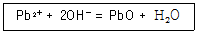
- 2.9
- 4.9
- 7.4
- 9.4
(정답률: 65%)
22. 폐수 속에 염산 18.25g을 중화시키려면 수산화칼슘 몇 g이 필요한가? (단, Cl의 원자량 35.5, Ca의 원자량 40 이다.)
- 18.5g
- 24.5g
- 37.5g
- 44.5g
(정답률: 61%)
23. 포화용존산소 농도가 12mg/L인 어떤 활성오니조에서 물의 실제 용존산소 농도를 8mg/L에서 2mg/L로 낮출 경우 액상으로의 산소 전달율은?
- 1.5배로 증가된다.
- 2.5배로 증가된다.
- 3.5배로 증가된다.
- 4.5배로 증가된다.
(정답률: 65%)
24. 폐수특성에 따른 적절한 처리법을 연결한 것과 가장 거리가 먼 것은?
- 비소 함유폐수 – 수산화 제2철 공침법
- 시안 함유폐수 – 오존 산화법
- 6가 크롬 함유폐수 – 알칼리 염소법
- 카드뮴 함유폐수 – 황화물 침전법
(정답률: 70%)
25. 20,000명의 처리인구를 가진 폐수처리시설에서 슬러지 발생량이 0.12kg/cap⦁d이고 슬러지는 70%의 휘발성 물질을 포함하고 있으며 이 중 50%가 분해된다. 분해슬러지 당 0.89m3/kg의 소화가스가 발생하며 50%의 메탄이 함유되고 있고 메탄의 열량은 35,850KJ/m3 이라면 소화조 보온을 위해 가용한 에너지(KJ/hr)는?
- 약 270,000 KJ/hr
- 약 380,000 KJ/hr
- 약 420,000 KJ/hr
- 약 560,000 KJ/hr
(정답률: 50%)
26. 1,000m3의 폐수중 부유물질농도가 200mg/L 일 때 처리효율이 70%인 처리장에서 발생슬러지량(m3)은? (단, 부유물질처리만을 기준으로 하며 기타 조건은 고려하지 않고, 슬러지 비중 : 1.03, 함수율 95%이다.)
- 2.36
- 2.46
- 2.72
- 2.96
(정답률: 62%)
27. 보통 음이온 교환수지에 대하여 가장 일반적인 음이온의 선택성 순서로 알맞은 것은?
- SO4-2 ＞ I-1 ＞ NO3-1 ＞ CrO4-2 ＞ Br-1
- SO4-2 ＞ NO3-1 ＞ CrO4-2 ＞ Br-1 ＞ I-1
- SO4-2 ＞ CrO4-2 ＞ NO3-1 ＞ I-1 ＞ Br-1
- SO4-2 ＞ CrO4-2 ＞ I-1 ＞ NO3-1 ＞ Br-1
(정답률: 72%)
28. BOD 200mg/L인 유기성 폐수를 활성 슬러지법으로 처리하고자 한다. F/M비를 0.25kgBOD/kgMLSS・d, 폭기시간 6시간이라면, 폭기조의 MLSS는?
- 2,700mg/L
- 3,200mg/L
- 3,700mg/L
- 4,200mg/L
(정답률: 61%)
29. 다음 중 보통 1차침전지에서 부유물질의 침강속도가 작게 되는 경우는? (단, Stokes 법칙 적용)
- 부유물질 입자의 밀도가 클 경우
- 부유물질 입자의 입경이 클 경우
- 처리수의 밀도가 작을 경우
- 처리수의 점성도가 클 경우
(정답률: 77%)
30. 혐기성 반응기에 있어서 생물학적 고형물량을 유지하고 증가시키는 방법으로 옳지 않은 것은?
- 짧은 수리학적 체류시간으로의 시스템 운전
- 시스템내의 고형물을 유지하는 농후한 슬러지 블랭킷의 개발
- 시스템에서 박테리아가 자라고 유지될 수 있는 고정된 표면의 제공
- 반응기 유출수로부터의 고형물의 분리 및 이 고형물의 반응기로의 재순환
(정답률: 65%)
31. 다음 중 분뇨와 같은 고농도 유기폐수를 처리하는데 적합한 최적처리법은?
- 표준활성슬러지법
- 응집침전법
- 여과⦁흡착법
- 혐기성소화법
(정답률: 67%)
32. 폐수량이 500m3/일이며, SS의 침강속도는 25m/일이다. SS를 90%까지 제고하고자 하면 침전지의 수면적은?
- 18m2
- 22m2
- 27m2
- 32m2
(정답률: 48%)
33. 폐수량 500m3/day, BOD 1,000mg/L인 폐수를 살수여상으로 처리하는 경우 여재에 대한 BOD부하를 0.2kg/m3・day로 할 때 여상의 용적은?
- 250m3
- 500m3
- 1,500m3
- 2,500m3
(정답률: 66%)
34. 다음의 물리화학적 처리방법 중 수중의 암모니아성 질소의 효과적 제거방법과 가장 거리가 먼 것은?
- Alum 주입
- Break point 염소주입법
- Zeolite 이용법
- 탈기법
(정답률: 71%)
35. 고도 수처리에 사용되는 분리방법에 관한 설명으로 옳지 않은 것은?
- 한외여과의 분리형태는 체걸름(Sieving)이다.
- 역삼투의 막형태는 대칭형 다공성막이다.
- 정밀여과의 구동력은 정수압차이다.
- 투석의 분리형태는 대류가 없는 층에서의 확산이다.
(정답률: 57%)
36. 처리장에 20,000m3/d의 폐수가 유입되고 있다. 체류시간은 30분, 속도경사 40sec-1의 응집침전조를 설계하고자 할 때 교반기 모터의 동력효율을 60%로 예상한다면 응집침전조의 교반기에 필요한 모터의 총동력은? (단, μ = 10-3kg/m⦁s이다.)
- 417W
- 667.2W
- 728.5W
- 1,112W
(정답률: 66%)
37. BOD 1kg 제거에 0.9kg의 산소(O2)가 소요된다. 폐수량이 20,000m3이고, BOD농도가 250mg/L 일 때 BOD를 모두 제거하는데 필요한 전력은? (단, 2kg O2 주입에 1kW의 전력이 소요된다.)
- 3,250kW
- 2,750kW
- 2,250kW
- 1,750kW
(정답률: 69%)
38. 폐수의 성질이 BOD 1,000mg/L, SS 1,500 mg/L, pH 3.5, 질소분 55mg/L, 인산분 12mg/L인 폐수가 있다. 이 폐수의 처리 순서로 타당한 것은?
- Screening → 중화 → 미생물처리 → 침전
- Screening → 침전 → 미생물처리 → 중화
- 침전 → Screening → 미생물처리 → 중화
- 미생물처리 → Screening → 중화 → 침전
(정답률: 72%)
39. 비교적 일정한 유량을 폐수처리장에 공급하기 위한 것으로, 예비처리시설 다음에 설치되는 시설은?
- 균등조
- 침사조
- 스크린조
- 침전조
(정답률: 79%)
40. 처리수의 BOD농도가 5mg/L인 폐수처리공정의 BOD제거효율은 1차 처리 40%, 2차 처리 80%, 3차 처리 15%이다. 이 폐수처리공정에 유입되는 유입수의 BOD농도는?
- 39mg/L
- 49mg/L
- 59mg/L
- 69mg/L
(정답률: 70%)
3과목: 수질오염공정시험방법
41. 유량 측정시 적용되는 웨어의 웨어판에 관한 기준으로 알맞은 것은?
- 웨어판 안측의 가장자리는 곡선이어야 한다.
- 웨어판은 수로의 장축에 직각 또는 수직으로 하여 말단의 바깥틀에 누수가 없도록 고정한다.
- 직각 3각 웨어판의 유량측정공식은 Q = K⦁d⦁h3/2이다. (K : 유량계수, b : 수로폭, h : 수두)
- 웨어판의 재료는 10mm 이상의 두께를 갖는 내구성이 강한 철판으로 하여야 한다.
(정답률: 71%)
42. 다음에 표시된 농도 중 가장 낮은 것은? (단, 용액의 비중은 모두 1.0이다.)
- 24 μg/mL
- 240 ppb
- 24 mg/L
- 2.4 ppm
(정답률: 70%)
43. 이온전극법에서 사용하는 장치에 관한 설명으로 옳지 않은 것은?
- 저항전위계 또는 이온측정기는 mV까지 읽을 수 있는 고압력 저항 측정기어야 한다.
- 이온전극은 분석대상 이온에 대한 고도의 선택성이 있다.
- 이온전극은 일반적으로 칼로멜전극 또는 산화은 전극이 사용된다.
- 이온전극은 이온농도에 비례하여 전위를 발생할 수 있는 전극이다.
(정답률: 57%)
44. 유도결합플라스마-원자발광분광법에서 시료와 혼합 표준액을 측정한 후 검정곡선의 작성방법이 아닌 것은?
- 검정곡선법
- 내부표준법
- 넓이백분율법
- 표준물질첨가법
(정답률: 60%)
45. 활성슬러지의 미생물 풀럭이 형성된 경우 DO 측정을 위한 전처리 방법은?
- 칼륨명반 응집침전법
- 황산구리 설퍼민산법
- 불화칼륨 처리법
- 아지드화나트륨 처리법
(정답률: 69%)
46. 자외선/가시선 분광법을 적용하여 아연 측정시 발색이 가장 잘되는 pH 정도는?
- pH 4
- pH 9
- pH 11
- pH 12
(정답률: 76%)
47. 공정시험기준에서 정의한 용어의 설명으로 옳지 않은 것은?
- 표준온도는 0℃를 말하고, 온수는 60~70℃, 냉수는 15℃ 이하를 말한다.
- 감압 또는 진공이라 함은 따로 규정이 없는 한 15mmHg이하를 말한다.
- '항량으로 될 때까지 건조한다'라 함은 같은 조건에서 1시간 더 건조할 때 전후 차가 g당 0.3mg 이하일 때를 말한다.
- 방울수라 함은 4℃에서 정제수를 20방울을 적하할 때 그 부피가 약 1mL 되는 것을 말한다.
(정답률: 74%)
48. 색도 측정에 관한 설명 중 옳지 않는 것은?
- 색도측정은 시각적으로 눈에 보이는 색상에 관계없이 단순 색도차 또는 단일 색도차를 계산한다.
- 백금-코발트 표준물질과 아주 다른 색상의 폐하수에는 적용할 수 없다.
- 근본적인 간섭은 적용 파장에서 콜로이드 물질 및 부유물질의 존재로 빛이 흡수 혹은 분산되면서 일어난다.
- 아담스-니컬슨(Adams-Nickerson) 색도공식을 근거로 한다.
(정답률: 70%)
49. 시료채취량 기준에 관한 내용으로 옳은 것은?
- 시험항목 및 시험횟수에 따라 차이가 있으나 보통 1~2L 정도이어야 한다.
- 시험항목 및 시험횟수에 따라 차이가 있으나 보통 3~5L 정도이어야 한다.
- 시험항목 및 시험횟수에 따라 차이가 있으나 보통 5~7L 정도이어야 한다.
- 시험항목 및 시험횟수에 따라 차이가 있으나 보통 8~10L 정도이어야 한다.
(정답률: 84%)
50. 시안화합물 측정시 방해물질과 이를 제거하기 위하여 첨가하는 시약으로 가장 거리가 먼 것은?
- 잔류염소 – 아스코르빈산용액
- 황화합물 – 아세트산아연용액
- 유지류 – 노말헥산
- 중금속 – 아비산나트륨용액
(정답률: 44%)
51. 수질오염공정시험기준상 노말헥산 추출물질과 가장 거리가 먼 것은?
- 휘발되지 않는 탄화수소, 탄화수소유도체
- 그리스유상물질
- 광유류
- 셀룰로오스류
(정답률: 80%)
52. 수질오염공정시험기준에서 총대장균군의 시험방법이 아닌 것은?
- 막여과법
- 시험관법
- 균군계수 시험법
- 평판집락법
(정답률: 72%)
53. 기체크로마토그래피에 사용하는 검출기 중 인 또는 황화합물을 선택적으로 검출 할 수 있는 것으로 가장 알맞은 것은?
- 전자포획형 검출기
- 불꽃광도형 검출기
- 열전도도 검출기
- 불꽃열이온화 검출기
(정답률: 54%)
54. 시료의 채취량은 시험항목 및 시험횟수에 따라 차이가 있으나 일반적으로 어느 정도가 적당한가?
- 1 ~ 2L
- 2 ~ 3L
- 3 ~ 5L
- 5 ~ 7L
(정답률: 83%)
55. 유도결합플라스마-원자발광분광법의 원리에 관한 다음 설명 중 괄호안의 내용으로 알맞게 짝지어진 것은?
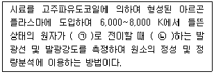
- ㉠ 들뜬 상태, ㉡ 흡수
- ㉠ 바닥 상태, ㉡ 흡수
- ㉠ 들뜬 상태, ㉡ 방출
- ㉠ 바닥 상태, ㉡ 방출
(정답률: 80%)
56. 전처리 방법 중 질산-과염소산에 의한 분해에 관한 설명으로 틀린 것은?
- 유기물을 다량 포함하고 있으면서 산분해가 어려운 시료에 적용한다.
- 시료에 질산을 넣고 가열하여 증발농축하고 방냉 후 다시 질산과 과염소산을 넣고 가열하여 백연이 발생하기 시작하면 가열을 중지한다.
- 질산만을 넣을 경우 폭발 위험이 있어 과염소산을 넣고 질산을 넣는다.
- 유기물을 함유한 뜨거운 용액에 과염소산을 넣어서는 안된다.
(정답률: 69%)
57. 식물성 플랑크톤(조류) 분석에 관한 설명으로 틀린 것은?
- 시료의 조제 : 시료의 개체수는 계수 면적당 10~40 정도가 되도록 조정한다.
- 시료의 조제 : 원심분리방법과 자연침전법을 적용한다.
- 정성시험 : 목적은 식물성 플랑크톤의 종류를 조사하는 것이다.
- 정량시험 : 식물성 플랑크톤의 계수는 정확성과 편리성을 위하여 고배율이 주로 사용된다.
(정답률: 71%)
58. BOD 측정시 시료의 전처리에 관한 내용이다. ( )안에 내용으로 맞는 것은?
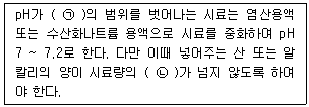
- ㉠ pH 4.3 ~ 8.5, ㉡ 0.2%
- ㉠ pH 5.6 ~ 8.3, ㉡ 0.3%
- ㉠ pH 6.3 ~ 8.3, ㉡ 0.3%
- ㉠ pH 6.5 ~ 8.5, ㉡ 0.5%
(정답률: 56%)
59. 다음은 부유물질의 측정 분석절차에 관한 내용이다. ( )안에 옳은 내용은?
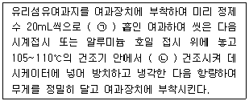
- ㉠ 2회, ㉡ 1시간
- ㉠ 2회, ㉡ 2시간
- ㉠ 3회, ㉡ 1시간
- ㉠ 3회, ㉡ 2시간
(정답률: 52%)
60. 0.⑤N-KMnO4 4.0L를 만들려고한다. KMnO4는 약 몇 g이 필요한가? (단, 원자량은 K=39, Mn=55 이다.)
- 3.2
- 4.6
- 5.2
- 6.3
(정답률: 59%)
4과목: 수질환경관계법규
61. 위임업무 보고사항 중 보고횟수 기준이 나머지와 다른 업무내용은?
- 배출업소의 지도, 점검 및 행정처분 실적
- 폐수처리업에 대한 등록, 지도단속실적 및 처리실적 현황
- 배출부과금 부과 실적
- 비점요염원의 설치신고 및 방지시설 설치 현황 및 행정처분 현황
(정답률: 38%)
62. 수질오염방지시설 중 화학적 처리시설이 아닌 것은?
- 살균시설
- 폭기시설
- 이온교환시설
- 침전물 개량시설
(정답률: 69%)
63. 공공수역에 분뇨・가축분뇨 등을 버린 자에 대한 벌칙기준은?
- 2년 이하의 징역 또는 2천만원 이항의 벌금
- 2년 이하의 징역 또는 1천만원 이항의 벌금
- 1년 이하의 징역 또는 1천만원 이항의 벌금
- 1년 이하의 징역 또는 5백만원 이항의벌금
(정답률: 68%)
64. 수질 및 수생태계 보전에 관한 법률상에서 적용하고 있는 용어의 정의로 틀린 것은?
- 비점오염저감시설 : 수질오염방지시설 중 비점오염원으로부터 배출되는 수질오염물질을 제거하거나 감소하게 하는 시설로서 환경부령이 정하는 것을 말한다.
- 강우유출수 : 비점오염원의 수질오염물질이 섞여 유출되는 빗물 또는 눈 녹은 물 등을 말한다.
- 기타 수질오염원 : 점오염원 및 비점오염원으로 관리되지 아니하는 수질오염물질을 배출하는 시설 또는 장소로서 환경부령이 정하는 것을 말한다.
- 비점오염원 : 불특정하게 수질오염물질을 배출하는 시설 및 지역으로 환경부령이 정하는 것을 말한다.
(정답률: 56%)
65. 초과부과금 부과대상 오염물질이 아닌 것은?
- 부유물질
- 황 및 그 화합물
- 망간 및 그화합물
- 유기인화합물
(정답률: 50%)
66. 환경부장관은 대권역별로 수질 및 수생태계 보전을 위한 기본계획을 몇 년마다 수립하여야 하는가?
- 1년
- 5년
- 10년
- 20년
(정답률: 82%)
67. 1일 폐수배출량이 2,000m3 이상인 폐수배출시설의 지역별, 항목별 배출허용기준으로 틀린 것은?(오류 신고가 접수된 문제입니다. 반드시 정답과 해설을 확인하시기 바랍니다.)
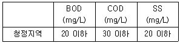
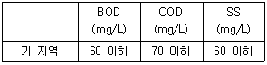
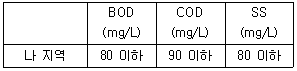
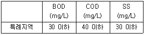
(정답률: 54%)
68. 개선명령을 받은 자가 개선명령을 이행하지 아니하거나 기간 이내에 이행은 하였으나 검사결과가 배출허용기준을 계속 초과할 때의 처분인 조업정지명령을 위반한 자에 대한 벌칙기준은?
- 3년 이하의 징역 또는 1천5백만원 이하의 벌금
- 3년 이하의 징역 또는 2천만원 이하의 벌금
- 5년 이하의 징역 또는 5천만원 이하의 벌금
- 7년 이하의 징역 또는 5천만원 이하의 벌금
(정답률: 70%)
69. 다음 중 환경부령이 정하는 관계전문기관으로 옳은 것은?
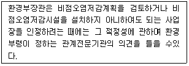
- 국립환경과학원
- 한국환경정책 ⦁ 평가연구원
- 한국환경기술개발원
- 한국건설기술연구원
(정답률: 65%)
70. 폐수 무방류 배출시설의 운영기록은 최종 기록일부터 얼마 동안 보존하여야 하는가?
- 1년간
- 2년간
- 3년간
- 5년간
(정답률: 71%)
71. 조업정지처분에 갈음하여 과징금을 부여할 수 있는 사업장과 가장 거리가 먼 것은?
- 발전소의 발전시설
- 의료기관의 배출시설
- 학교의 배출시설
- 공공기관의 배출시설
(정답률: 69%)
72. 낚시금지구역 또는 낚시제한구역 안내판의 규격 중 색상기준으로 옳은 것은?
- 바탕색 : 녹색, 글씨 : 회색
- 바탕색 : 녹색, 글씨 : 흰색
- 바탕색 : 청색, 글씨 : 회색
- 바탕색 : 청색, 글씨 : 흰색
(정답률: 75%)
73. 환경기술인의 관리사항과 가장 거리가 먼 것은?
- 폐수배출시설 및 수질오염방지시설의 설치에 관한 사항
- 폐수배출시설 및 수질오염방지시설의 개선에 관한 사항
- 운영일지의 기록⦁보존에 관한 사항
- 수질오염물질의 측정에 관한 사항
(정답률: 55%)
74. 해역의 항목별 생활환경 환경기준으로 틀린 것은?
- 수소이온농도(pH) : 6.5~8.5
- 총대장균군(총대장균군수/100mL) : 1,000 이하
- 용매 추출유분(mg/L) : 0.01 이하
- T-N(mg/L) : 0.5 이하
(정답률: 68%)
75. 조업정지처분에 갈음하여 부과할 수 있는 과징금의 최대금액은?
- 1억원
- 2억원
- 3억원
- 5억원
(정답률: 65%)
76. 초과배출부과금 부과대상이 되는 수질오염물질이 아닌 것은?
- 디클로로메탄
- 폴리염화비페닐
- 테트라클로로에틸렌
- 페놀류
(정답률: 48%)
77. 수질 및 수생태계 정책심의위원회 위원(위원장, 부위원장 포함)으로 가장 거리가 먼 것은?
- 환경부장관
- 국토교통부장관
- 환경부장관이 위촉하는 수질 및 수생태계 관련 전문가 3인
- 산림청장
(정답률: 73%)
78. 환경부장관이 설치⦁운영하는 측정망과 가장 거리가 먼 것은?
- 퇴적물 측정망
- 생물 측정망
- 공공수역 유해물질 측정망
- 기타오염원에서 배출되는 오염물질 측정망
(정답률: 54%)
79. 다음 규정을 위반하여 환경기술인 등의 교육을 받게 하지 아니한 자에 대한 과태료 처분 기준은?
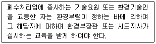
- 100만원 이하의 과태료
- 200만원 이하의 과태료
- 300만원 이하의 과태료
- 500만원 이하의 과태료
(정답률: 71%)
80. 일일기준초과배출량 산정시 적용되는 일일유량산정방법은 [일일유량 = 측정유량 × 일일조업시간]이다. 일일조업시간에 관한 내용으로 알맞은 것은?
- 일일조업시간은 측정하기 전 최근 조업한 60일간의 배출시설의 조업시간 평균치로서 시간(HR)으로 표시한다.
- 일일조업시간은 측정하기 전 최근 조업한 60일간의 배출시설의 조업시간 평균치로서 분(min)으로 표시한다.
- 일일조업시간은 측정하기 전 최근 조업한 30일간의 배출시설의 조업시간 평균치로서 시간(HR)으로 표시한다.
- 일일조업시간은 측정하기 전 최근 조업한 30일간의 배출시설의 조업시간 평균치로서 분(min)으로 표시한다.
(정답률: 57%)